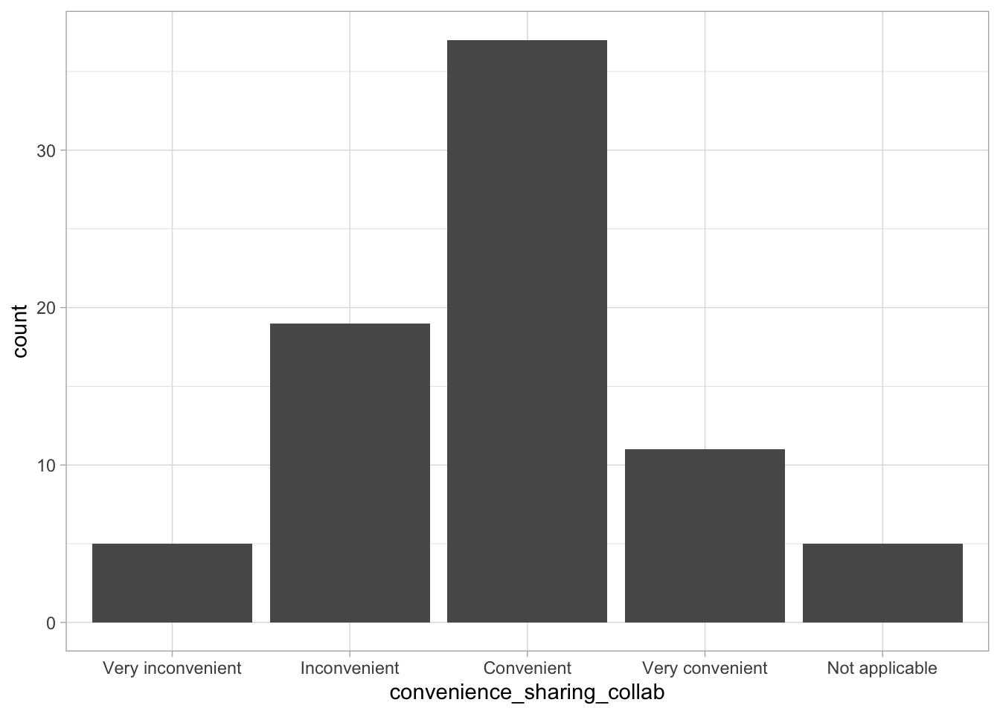

Primary department or unit
Question 2: What is your primary department/unit?
TODO Normalize these before plotting.
The following shows simple visualizations of the survey data.
The responses prior to 2022-12-22 were used to test the survey, and aren’t really data.
survey <- survey %>%
dplyr::filter(., timestamp > as_date("2022-12-22"))There are \(n=\) 34 questions in total.
As of 2023-01-11, we have had \(n\)= 9 responses.
Question 1: What Penn State campus do you represent?
survey %>%
dplyr::filter(., !is.na(campus)) %>%
ggplot2::ggplot() +
ggplot2::aes(campus) +
ggplot2::geom_bar()Figure 22.1: What Penn State campus do you represent?
Question 2: What is your primary department/unit?
TODO Normalize these before plotting.
Question 3: What is your position at Penn State?
survey %>%
ggplot2::ggplot() +
ggplot2::aes(position) +
ggplot2::geom_bar()Figure 22.2: What is your position at Penn State?
Question 33: What is the highest post-secondary degree you have earned?
survey %>%
dplyr::filter(., !is.na(highest_degree_earned)) %>%
ggplot2::ggplot() +
ggplot2::aes(highest_degree_earned) +
ggplot2::geom_bar()Figure 22.3: What is the highest post-secondary degree you have earned?
Question 4: How many years have passed since you completed that degree?
survey %>%
dplyr::mutate(., years_since_degree = factor(
years_since_degree,
c("< 2 years", "2-5 years", "5-10 years", "10+"),
ordered = TRUE
)) %>%
dplyr::filter(., !is.na(years_since_degree)) %>%
ggplot2::ggplot() +
ggplot2::aes(years_since_degree) +
ggplot2::geom_bar()
Figure 22.4: How many years have passed since you completed that degree?
Question 5: What are the primary types of digital data that are used in your research? (choose all that apply)
TODO: Create plots
Question 6: Do you collect data that have legal or ethical restrictions governing who may access it or how it may be used?
survey %>%
ggplot2::ggplot() +
ggplot2::aes(restricted_ethical) +
ggplot2::geom_bar()Figure 22.5: Data about human participants that are subject to restrictions due to ethical concerns
survey %>%
ggplot2::ggplot() +
ggplot2::aes(restricted_legal_ip) +
ggplot2::geom_bar()Figure 22.6: Data subject to legal/intellectual property restrictions
survey %>%
ggplot2::ggplot() +
ggplot2::aes(restricted_sponsor) +
ggplot2::geom_bar()Figure 22.7: Data subject to contractual restrictions from a sponsor or provider
survey %>%
ggplot2::ggplot() +
ggplot2::aes(restricted_none) +
ggplot2::geom_bar()Figure 22.8: My data are not restricted in these ways
Question 7: Where do you store data for active projects where data collection and analysis is still ongoing?
survey %>%
ggplot2::ggplot() +
ggplot2::aes(store_usb) +
ggplot2::geom_bar()Figure 22.9: External USB or flash drive
survey %>%
ggplot2::ggplot() +
ggplot2::aes(store_lab) +
ggplot2::geom_bar()Figure 22.10: Personal/lab computer
survey %>%
ggplot2::ggplot() +
ggplot2::aes(store_server) +
ggplot2::geom_bar()Figure 22.11: Departmental/college server
survey %>%
ggplot2::ggplot() +
ggplot2::aes(store_icds) +
ggplot2::geom_bar()Figure 22.12: ICDS/ROAR allocation
survey %>%
ggplot2::ggplot() +
ggplot2::aes(store_onedrive) +
ggplot2::geom_bar()Figure 22.13: Microsoft OneDrive/SharePoint
survey %>%
ggplot2::ggplot() +
ggplot2::aes(store_googledrive) +
ggplot2::geom_bar()Figure 22.14: Google Drive
survey %>%
ggplot2::ggplot() +
ggplot2::aes(store_dropbox) +
ggplot2::geom_bar()Figure 22.15: Dropbox
survey %>%
ggplot2::ggplot() +
ggplot2::aes(store_box) +
ggplot2::geom_bar()
Figure 22.16: Box
TODO Recode these in data gathering and cleaning.
Question 8: How important to you is sharing data from active projects with research collaborators at Penn State or outside of Penn State?
survey %>%
dplyr::mutate(., importance_sharing_collab = factor(
importance_sharing_collab,
c(
"Not Important",
"Slightly important",
"Moderately important",
"Important",
"Very important"
)
)) %>%
dplyr::filter(., !is.na(importance_sharing_collab)) %>%
ggplot2::ggplot() +
ggplot2::aes(importance_sharing_collab) +
ggplot2::geom_bar()
Figure 22.17: How important to you is sharing data from active projects with research collaborators at Penn State or outside of Penn State?
Question 9: How convenient is it for you to share data from active projects with research collaborators at Penn State or outside of Penn State?
survey %>%
dplyr::mutate(.,
convenience_sharing_collab = factor(
convenience_sharing_collab,
c(
"Very inconvenient",
"Inconvenient",
"Neither convenient or inconvenient",
"Convenient",
"Very convenient",
"Not applicable"
)
)) %>%
dplyr::filter(., !is.na(convenience_sharing_collab)) %>%
ggplot2::ggplot() +
ggplot2::aes(convenience_sharing_collab) +
ggplot2::geom_bar()
Question 10: What are the main barriers to sharing data from active projects with research collaborators?
survey %>%
dplyr::filter(., !is.na(comments)) %>%
dplyr::select(., barriers_sharing_collab) %>%
knitr::kable(format = 'html')| barriers_sharing_collab |
|---|
| ensuring that users adhere to data security and the time required to prepare data sets for sharing |
| Lots of different file types, collaborators not used to using file structure/naming structure |
Question 11: How important to you is sharing data from completed projects with the broader research community (i.e., not direct collaborators)?
survey %>%
dplyr::mutate(.,
importance_share_community = factor(
importance_share_community,
c(
"Not Important",
"Slightly important",
"Moderately important",
"Important",
"Very important"
)
)) %>%
dplyr::filter(., !is.na(importance_share_community)) %>%
ggplot2::ggplot() +
ggplot2::aes(importance_share_community) +
ggplot2::geom_bar()
Figure 22.18: How important to you is sharing data from completed projects with the broader research community (i.e., not direct collaborators)?
Question 12: Which of the following obstacles make sharing data with the research community harder for you? Mark all that apply.
survey %>%
ggplot2::ggplot() +
ggplot2::aes(barriers_sharing_security) +
ggplot2::geom_bar()Figure 22.19: Ensuring security/restricting access
survey %>%
ggplot2::ggplot() +
ggplot2::aes(barriers_sharing_curation) +
ggplot2::geom_bar()Figure 22.20: Taking time to curate, organize, document data
survey %>%
ggplot2::ggplot() +
ggplot2::aes(barriers_sharing_alter) +
ggplot2::geom_bar()Figure 22.21: Altering data to make it suitable to share
survey %>%
ggplot2::ggplot() +
ggplot2::aes(barriers_sharing_resources) +
ggplot2::geom_bar()Figure 22.22: Insufficient resources for sharing
survey %>%
ggplot2::ggplot() +
ggplot2::aes(barriers_sharing_staff) +
ggplot2::geom_bar()Figure 22.23: Lack of available or knowledgeable staff
Question 13: Do research sponsors/funders in your field require data sharing?
survey %>%
ggplot2::ggplot() +
ggplot2::aes(funders_require_data_sharing) +
ggplot2::geom_bar()Figure 22.24: Do research sponsors/funders in your field require data sharing?
Question 14: Do journals in your field require data sharing?
survey %>%
ggplot2::ggplot() +
ggplot2::aes(journals_require_data_sharing) +
ggplot2::geom_bar()Figure 22.25: Do journals in your field require data sharing?
Question 16: How well-equipped do you feel you, your colleagues, and trainees are to meet data management and sharing requirements of sponsors/funders or journals?
survey %>%
dplyr::mutate(.,
equipped_data_mgmt_sharing = factor(
equipped_data_mgmt_sharing,
c(
"Not equipped at all",
"Slightly equipped",
"Moderately equipped",
"Equipped",
"Very well equipped"
)
)) %>%
dplyr::filter(., !is.na(equipped_data_mgmt_sharing)) %>%
ggplot2::ggplot() +
ggplot2::aes(equipped_data_mgmt_sharing) +
ggplot2::geom_bar()Figure 22.32: How well-equipped do you feel you, your colleagues, and trainees are to meet data management and sharing requirements of sponsors/funders or journals?
Question 17: How often do you create computer scripts or data analysis code in the conduct of your research?
survey %>%
dplyr::mutate(., create_analysis_code = factor(
create_analysis_code,
c("Never", "Rarely",
"Sometimes", "Often", "Always")
)) %>%
dplyr::filter(., !is.na(create_analysis_code)) %>%
ggplot2::ggplot() +
ggplot2::aes(create_analysis_code) +
ggplot2::geom_bar()Figure 22.33: How often do you create computer scripts or data analysis code in the conduct of your research?
Question 18: How often do you share computer scripts or data analysis code with direct research collaborators ?
survey %>%
dplyr::mutate(.,
share_analysis_code_collab = factor(
share_analysis_code_collab,
c("Never", "Rarely",
"Sometimes", "Often", "Always")
)) %>%
dplyr::filter(., !is.na(share_analysis_code_collab)) %>%
ggplot2::ggplot() +
ggplot2::aes(share_analysis_code_collab) +
ggplot2::geom_bar()
Figure 22.34: How often do you share computer scripts or data analysis code with direct research collaborators ?
Question 19: Do you create other kinds of software in the conduct of your research?
survey %>%
ggplot2::ggplot() +
ggplot2::aes(create_other_code) +
ggplot2::geom_bar()Figure 22.35: Do you create other kinds of software in the conduct of your research?
Question 20: How often do you use open source code sharing tools (e.g., GitHub, GitLab, BitBucket)?
survey %>%
dplyr::mutate(., use_code_sharing_tools = factor(use_code_sharing_tools,
c("Never", "Rarely",
"Sometimes", "Often", "Always"))) %>%
dplyr::filter(., !is.na(use_code_sharing_tools)) %>%
ggplot2::ggplot() +
ggplot2::aes(use_code_sharing_tools) +
ggplot2::geom_bar()
Figure 22.36: How often do you use open source code sharing tools (e.g., GitHub, GitLab, BitBucket)?
Question 21: Do sponsors/funders in your field require code sharing?
survey %>%
ggplot2::ggplot() +
ggplot2::aes(funders_require_code_sharing) +
ggplot2::geom_bar()Figure 22.37: Do sponsors/funders in your field require code sharing?
Question 22: Do journals in your field require code sharing?
survey %>%
ggplot2::ggplot() +
ggplot2::aes(journals_require_code_sharing) +
ggplot2::geom_bar()Figure 22.38: Do journals in your field require code sharing?
Question 34: How often do you share computer scripts or data analysis code openly?
survey %>%
dplyr::mutate(.,
share_analysis_code_community = factor(
share_analysis_code_community,
c("Never", "Rarely",
"Sometimes", "Often", "Always")
)) %>%
dplyr::filter(., !is.na(share_analysis_code_community)) %>%
ggplot2::ggplot() +
ggplot2::aes(share_analysis_code_community) +
ggplot2::geom_bar()
Figure 22.39: How often do you share computer scripts or data analysis code openly?
Question 24: What is your experience with/knowledge of open science practices?
TODO: Recode these.
survey %>%
dplyr::mutate(.,
knowledge_open_science = factor(
knowledge_open_science,
c("No experience/knowledge", "Limited experience/knowledge",
"Some experience/knowledge", "Considerable experience/knowledge", "Extensive experience/knowledge")
)) %>%
ggplot2::ggplot() +
ggplot2::aes(knowledge_open_science) +
ggplot2::geom_bar()
Figure 22.40: What is your experience with/knowledge of open science practices?
Question 25: Describe your awareness of the FAIR (findable, accessible, interoperable, reusable) principles pertaining to research data.
survey %>%
dplyr::mutate(.,
awareness_FAIR = factor(
awareness_FAIR,
c("No awareness", "Limited awareness",
"Some awareness", "Considerable awareness", "Extensive awareness")
)) %>%
ggplot2::ggplot() +
ggplot2::aes(awareness_FAIR) +
ggplot2::geom_bar()Figure 22.41: Describe your awareness of the FAIR (findable, accessible, interoperable, reusable) principles pertaining to research data.
Question 26: Do you apply FAIR principles in your own data management and sharing practices?
survey %>%
dplyr::mutate(.,
apply_FAIR = factor(
apply_FAIR,
c("Never", "Rarely",
"Sometimes", "Often", "Always", "Not applicable")
)) %>%
ggplot2::ggplot() +
ggplot2::aes(apply_FAIR) +
ggplot2::geom_bar()
Figure 22.42: Do you apply FAIR principles in your own data management and sharing practices?
Question 27: Have you heard of the “reproducibility crisis” in science?
survey %>%
ggplot2::ggplot() +
ggplot2::aes(heardof_reproducibility_crisis) +
ggplot2::geom_bar()
Figure 22.43: Have you heard of the ‘reproducibility crisis’ in science?
Question 28: Is there a reproducibility crisis in your area of research?
survey %>%
ggplot2::ggplot() +
ggplot2::aes(my_area_reproducibility_crisis) +
ggplot2::geom_bar()Figure 22.44: Is there a reproducibility crisis in your area of research?
Question 29: How much benefit would you derive from a center at Penn State focused on supporting the adoption of best practices in data management and sharing, code sharing, open science, and reproducible research?
survey %>%
dplyr::mutate(.,
benefit_psu_center = factor(
benefit_psu_center,
c("No benefit", "Minimal benefit",
"Some benefit", "Considerable benefit", "Extensive benefit", "Not applicable")
)) %>%
dplyr::filter(., !is.na(benefit_psu_center)) %>%
ggplot2::ggplot() +
ggplot2::aes(benefit_psu_center) +
ggplot2::geom_bar()
Figure 22.45: How much benefit would you derive from a center at Penn State focused on supporting the adoption of best practices in data management and sharing, code sharing, open science, and reproducible research?
Comments